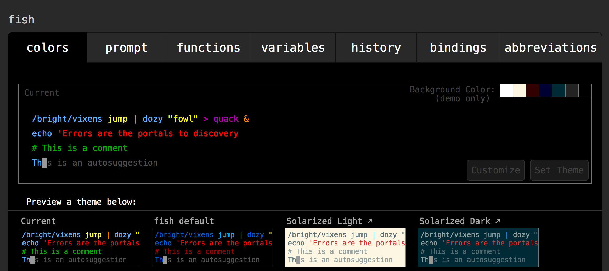
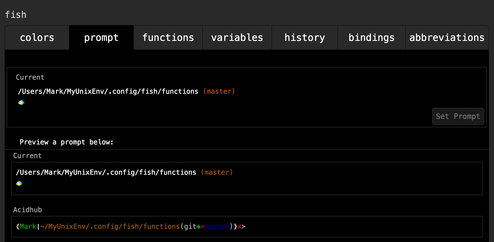
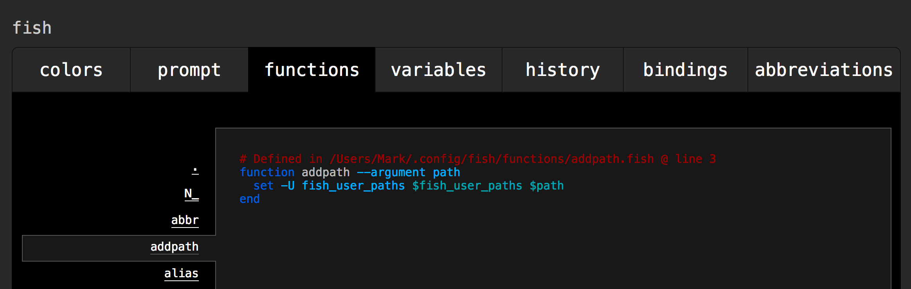
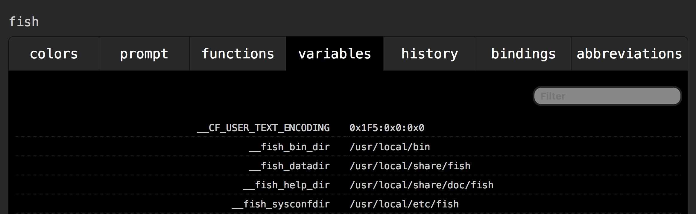
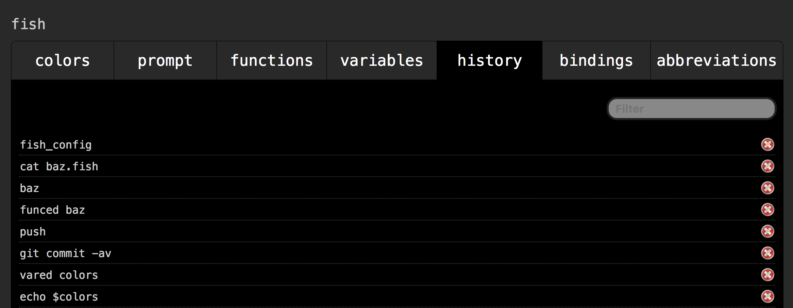
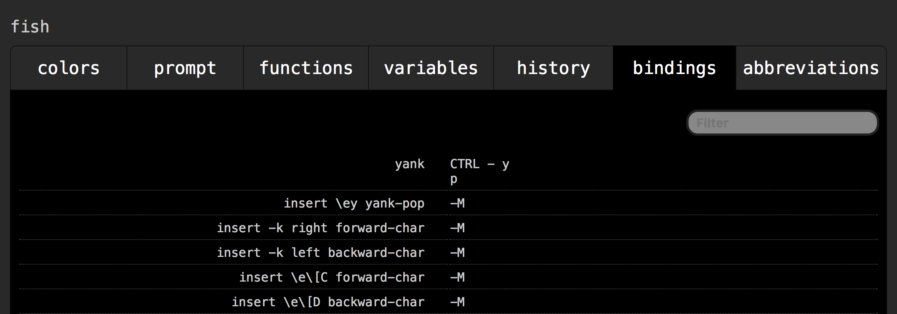
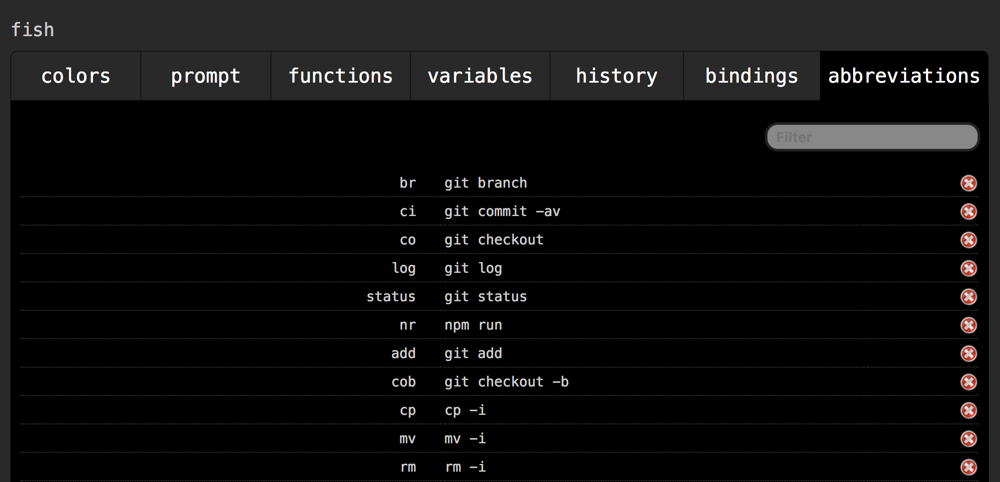

The fish Shell
by Mark Volkmann
mark@objectcomputing.com
Object Computing, Inc.
November 2017
Come for the colors and autocomplete,
stay for the sane scripting!

Table of Contents
Fish is a *nix shell that offers an alternative
to shells like bash and zsh.
At a high level, fish provides the following benefits:
- auto-suggestions while typing
- auto-complete of commands, their switches (a.k.a. options), file paths,
variable names, git branches, and more
- easy access to web-based help
- colorful prompts
- ability to customize colors and the prompt using a web UI
- highly consistent and simple scripting language
This article explains why you might prefer fish over other shells.
Really learning a shell is similar to learning a new programming language.
Similar topics are covered here such as
variables, functions, string operations, and so on.
If writing scripts in other shells has felt tedious in the past,
this is your chance to learn a shell that makes scripting easier!
The latest version of fish at the time of this article is 2.6.0.
TODO: This may change before this article is published!
The fish shell uses the GNU General Public License, version 2.
Here's a summary of that license:
You may copy, distribute and modify the software
as long as you track changes/dates in source files.
Any modifications to or software including (via compiler)
GPL-licensed code must also be made available under the GPL
along with build and install instructions.
-
Everything that can be done in other shell languages
should be possible to do in fish,
though fish may rely on external commands in doing so.
-
Fish should be user friendly, but not at the expense of expressiveness.
Most tradeoffs between power and ease of use
can be avoided with careful design.
-
Whenever possible without breaking the above goals,
fish should follow the Posix syntax.
(This may lead some to avoid using fish for
sysadmin and install types of scripts
because there is often a desire for those to be highly portable
without requiring installation of new software such as fish.
However, for scripts targeted at typical users
or scripts that only you will use,
implementing them in a shell that is not 100% Posix compliant
is much less of a concern.)
-
The shell language should have a small set of orthogonal features.
-
Everything should be tab-completable, and
every tab completion should have a description.
-
Every syntax error and error in a builtin command should result in
an error message describing what went wrong and a relevant help page.
Whenever possible, errors should be flagged red
by the syntax highlighter.
-
The language should be uniform so that once
the user understands the command/argument syntax,
they will know the whole language and be able to
use tab-completion to discover new features.
The first release of fish was on Februrary 13, 2005.
Axel Liljencrantz was the main developer and maintainer of
versions 1.0 to 1.23.1 which were in SourceForge.
The last 1.x release was in March 2009.
Various people maintained forks at Gitorious and elsewhere,
but it seems no releases were ever made.
A person that goes by "ridiculousfish" got involved in late 2011
and released a beta of a fork called "fishfish" in 2012.
This incorporated much of the work of previous fish contributors
and eventually became fish 2.0.
fish was originally implemented in C, but is now primarily C++.
The remainder of this article is split into three sections.
The first section describes using fish.
The second section describes customizing fish.
The third section describes scripting in fish.
For macOS, there is an installer.
If
Homebrew has been installed,
fish can also be installed by entering
brew install fish.
For Windows, fish can be run in Cygwin.
In Windows 10, fish can be run in the "Windows Subsystem for Linux" (WSL).
I highly recommend installing fish now so you can try each feature
as it is explained here.
It's easy enough to uninstall later if desired.
To make fish the default shell so new terminal windows automatically use it,
enter chsh -s /usr/local/bin/fish.
Perhaps it's best to hold off on donig this until you become
convinced that fish is for you. I'm confident you will!
This fish shell can be uninstalled by changing
the default shell to something else (like bash)
and running the following commands:
rm -Rf /usr/local/etc/fish /usr/local/share/fish ~/.config/fishrm /usr/local/share/man/man1/fish*.1cd /usr/local/binrm -f fish fish_indent
There are many sources for help on fish.
The main web site at
https://fishshell.com/
provides excellent documentation.
Entering just
help in a terminal
opens the local copy of this documentation
for the version of fish that is installed
in the default web browser.
Entering man command-name
displays help in the terminal.
For many commands, entering command-name -h
does the same.
Entering help command-name
displays the same help in the default web browser,
but with better formatting.
Other great sources of help include:
Once fish has been installed, open a terminal.
If fish is not the default shell, enter fish to start a fish shell.
To exit a fish shell, enter exit.
Autosuggestions suggest remaining text for a command
while the command is being typed.
Typically this appears as gray text,
sometimes referred to as ghosting,
but the color can be customized.
It derives suggestions from command history,
possible commands, possible switches,
variables, and file paths.
If the suggestion is not desired, continue typing.
To accept a suggested completion, press the right arrow.
To execute the command, press enter.
Possible commands and switches are derived from
man pages that fish has parsed.
If new man pages are installed,
enter fish_update_completions to parse them.
Autosuggestions only provide one suggestion.
To see more options, press tab.
This presents a list of options that includes
command names, switches, variable names,
file paths,
git branch names (including remote branches),
process names/ids,
job names/ids,
man page names,
ssh hosts,
users,
and more.
The options presented depend on the command that has been entered.
For example, if the su command has been entered,
pressing tab displayes all known usernames.
If there is only one option, it will be expanded in place.
If there is more than one option,
up to four rows will be listed.
If there are more than four rows of options,
they will be followed by "...and n more rows".
To see the remaining options, press tab again.
To select an option, press tab repeatedly until
the desired option is highlighted.
Highlighting cycles back to first option
if tab is pressed while the last option is highlighted.
When the desired option is highlighted, press enter to accept it.
Press enter again to execute the command.
To filter the list of options,
press tab until some option is highlighted,
then type a substring that must be contained in the options.
A search entry field starting with "search:" will be displayed.
To skip selecting an option, press the escape key.
Examples
To list files in the current directory whose names contain "d",
enter ls d and press tab.
This also works when only ls entered
before pressing tab. In this case the options are
all files in the current directory.
To output the value of a variable whose name begins with "re",
enter echo $re and press tab repeatedly
until the desired variable is highlighted.
Then press enter once to select it and
again to execute the echo command.
To kill a process whose name contains "lo",
enter kill lo and press tab repeatedly
until the desired process is highlighted.
Then press enter once to select it and
again to execute the kill command.
To get help on a command that contains "lo",
enter man lo and press tab repeatedly
until the desired command is highlighted.
Then press enter once to select the command and
again to execute the man command.
Tab completions can be defined for custom commands
using the complete command.
This is an advanced topic.
The syntax is
complete -c commandName -s shortSwitch -l longSwitch -a 'argument words'
TODO: See your functions/greet.fish and completions/greet.fish example
which is not working yet.
Also see https://fishshell.com/docs/current/commands.html#complete
and https://fishshell.com/docs/current/index.html#completion-own.
All commands entered are saved in command history,
except those that begin with a space.
Those are treated like incognito commands.
This exception may be removed in fish 3.
Duplicate commands are automatically removed,
retaining only their most recent occurrence.
A separate command history is maintained for each session,
but new sessions start with the command history
of the session from which they were created.
Command history is stored in ~/.local/share/fish/fish_history.
This file stores each command and when it was entered.
To navigate through all previously entered commands
press the up and down arrow keys.
Press enter to execute the displayed command
or press ctrl-c to exit without executing one.
To restrict to commands that contain a given substring,
type the substring before pressing the arrow keys.
Many commands accept switches that affect their functionality.
Switches can have short and long forms.
For example, the grep command
can perform case insensitive matches.
This is specified using the --ignore-case (long)
or -i (short) switch.
Command examples in this article always use the long forms of switches
and commands are followed by the short form in parentheses.
To list all commands in the history, enter history.
To list only commands that contain a given substring,
enter history text.
This is the same as entering
history search --contains substring (-c).
To list only commands that begin with a given prefix, enter
history search --prefix prefix (-p).
To include the date and time that commands were issued,
add the --show-time-prepends (-t) switch.
To limit the number of commands output,
add the --max (-n) switch followed by a number.
For example, history -n 5.
Note that the space after -n is required.
To clear all command history, enter history clear.
To delete commands from history that contain a given substring,
enter history delete --contains substring.
To delete commands from history that begin with a given prefix,
enter history delete --prefix prefix (-p).
Like in other shells, the current working directory
can be changed by using the cd command.
However, since the initial character of directory paths
(., /, and ~)
is not a valid character in any command,
fish interprets just entering a directory path
as a request to change the working directory.
For example, entering
.. cds to the parent directory and
~ cds to your home directory.
Tab completion can be used to assist in
entering each part of a directory path.
This even works without entering anything,
so it's possible to navigate to any child directory
by just pressing tab repeatedly
until the desired directory name is highlighted
and then pressing enter once to select it
and again to cd to it.
Like in other shells, to print the current working directory
enter pwd.
The dirh command prints a
list of the last 25 directories visited.
The current directory will be highlighted.
To go back one, enter prevd or
press alt-left (in macOS, cmd-option-left).
To go forward one, enter nextd or
press alt-right (in macOS, cmd-option-right).
This is a very convenient way to change to a previous directory!
In addition, a stack of specific directories is maintained.
To push a new directory onto the stack and cd to it,
enter pushd directory.
To pop the current directory off the stack
and cd to the directory now at the top,
enter popd.
It is not possible to pop the last directory off the stack.
To view the current directory stack, enter dirs.
Every fish command is executed by entering its name
followed by switches and arguments, if any, separated by spaces.
Everything in fish is done with commands.
This includes control statements like
if, switch,
for, and while.
It also includes defining functions.
It's hard to think of another programming language
with such a consistent syntax.
It is somewhat like Lisp in this regard.
Many switches support both a long and short form.
Long switch names are preceded by two dashes.
Short switch names are preceded by one dash
and their names are a single letter.
Nearly all commands set the status variable to
0 for success and another number for failure.
true and false are not boolean literals.
true is a command that sets status to 0 and
false is a command that sets status to 1.
Commands that do not set status include
and,
begin,
break,
builtin,
case,
command,
continue,
else,
end,
for,
if,
or,
switch,
and while.
Despite being commands, most of these
are used more like language keywords.
Commands are terminated by a newline or semicolon.
In a shell, pressing the enter key produces a newline.
Semicolons allow multiple commands to appear on the same line.
There is a short list of commands that create a "block"
which is a set of commands.
These include block,
if, switch,
for, while,
and function.
These commands can span any number of lines and
are terminated when the corresponding end command is reached.
Commands can be split over multiple lines in two ways.
One is by pressing enter when there is an unterminated block.
Another is by typing the \ continuation character
before a command has been completely entered
and pressing the enter key.
Multi-line commands can be recalled and edited
just like single-line commands.
After a multi-line command has been recalled,
press the left arrow and then
press the up and down arrows to navigate between lines.
To include a space in an argument,
precede the space with a backslash or
enclose the argument in single or double quotes.
Arguments are expanded before commands are executed.
This includes evaluating wildcards in file paths.
To execute one command and then execute a second command
only if the first succeeded, use
command1; and command2.
Note the semicolon at end of the first command and the use of
and instead of && like in bash.
and is not a keyword. It is a command that executes the
command passed to it only if the status from the previous command is zero.
If command1; command2 were used instead
and command1 had a bad status,
command2 would still be executed.
To execute one command and then execute a second command
only if the first failed, use
command1; or command2.
Note the semicolon at end of the first command and the use of
or instead of || like in bash.
or is not a keyword. It is a command that executes the
command passed to it only if the status from the previous command is non-zero.
While these conventions for and and or
may seem unusual at first,
they follow the consistent syntax of fish
where everything is done with commands and
all commands are terminated with a newline or semicolon.
The fish shell can be configured in three ways:
by executing commands in a shell,
adding commands in a configuration file,
and in a web UI.
To start the web UI, enter
fish_config starting-tab-name.
Specifying the starting tab name is optional
and defaults to "colors".
This command starts a local web server and
opens a new tab in the default web browser.
The UI contains seven tabs that are described below.
The "colors" tab displays the current color settings
and allows them to be customized.
To use a provided color theme, select one,
press the "Set Theme!" button, and
wait a few seconds for it to change to "Theme Set!".

Colors can be customized for the following syntax elements:
commands, parameters, statement terminators, quoted strings,
redirections, errors, comments, and autosuggestions.
To customize one of these, click the corresponding syntax example
near the top of the UI and
select a color from the color grid that will be displayed below.
When finished customizing the colors, press the "Set Theme" button.
Note that these colors are not used when files containing
fish function definitions are simply cat'ed in a terminal.
While the "color" tab allows selecting a background color,
this is only for seeing how the other colors look
against that background.
It does not actually change the terminal background color.
If using the Terminal app in macOS, the background color can be changed by
selecting Preferences...Profiles...Background...Colors & Effects.
If using the iTerm2 app in macOS, the background color can be changed by
selecting Preferences...Profiles...Colors...Background.
The "prompt" tab displays the contents
of the current fish shell prompt.
It allows selection from 17 predefined prompts.
To change the prompt, select one and press "Prompt Set!"
DANGER: This overwrites functions/fish_prompt.fish,
so if you have defined a custom prompt in that file
and don't want to wipe it out, don't do this!
Defining custom prompts is discussed later.

The "functions" tab provides a read-only view
of all functions that have been defined.
Select a function name to see its definition
which includes all the commands it executes.

The "variables" tab provides a read-only view
that lists all universal variables and their values.
This does not list global or local variables.
The distinctions between these variable types is discussed later.

The "history" tab provides a mostly read-only view
of your command history in the order in which commands
were issued from any terminal,
starting with the most recent commands.
To delete a command from history,
click the circled "X" to its right.

The "bindings" tab provides a read-only view
that lists the current key bindings.

The "abbreviations" tab provides an editable list
of all the abbreviations that have been defined.
To modify an existing abbreviation, click the current command,
change it, and press the "Save" button.
To delete an existing abbreviations,
click the circled "X" to its right.
To add a new abbreviation, enter a name and a command
in the two inputs at the bottom and press the "Save" button.
one for the name and one for the associated command.
Changing the name of an existing abbreviation
creates a new abbreviation with that name,
but doesn't delete the existing one.
Often abbreviations are defined in config.fish
(discussed later), but they can also be defined from a terminal.

Pressing the enter key in the terminal where
the fish_config command was entered
shuts down the server that serves this web UI.
To restart it, enter fish_config again,
which will also open a new browser tab.
Fish is billed as not needing configuation.
Strictly speaking this is true,
but if you currently use another shell like bash,
you likely have configuration for it
(in ~/.bash_profile and ~/.bashrc)
and will want similar configuration for fish.
Examples include creating aliases and abbreviations,
and setting variables such as PATH.
The fish configuration file is named config.fish
and should be placed in the ~/.config/fish directory.
Saving configuration in this file enables
copying the file to other machines
where the same configuration is desired.
A "login shell" is created for every new terminal window.
For users of tmux, this includes creating new tmux panes.
An "interactive shell" is one in which a user
can enter commands and see their output.
They are created when a subshell is created.
For example, this happens when the command fish
is entered in a fish shell.
Login shells are also interactive shells.
When a shell script is run, a new non-interactive shell
is created and is used to run the script.
Inside config.fish,
to run commands only when starting a login shell,
place the commands inside an if command as follows:
if status --is-login; ...; end.
To run commands only when starting an interactive shell, use
if status --is-interactive; ...; end.
While functions can be defined in config.fish,
it is more efficient to use autoloading functions.
These are discussed later.
An alias is an alternate name, usually shorter, for some command.
To define an alias, enter alias name command.
To list all aliases, enter alias.
To remove an alias, enter functions --erase name (-e).
Defining an alias creates a function with the specified name
that runs when the alias is used as a command.
Functions are described later.
The function is only defined in the current session
and goes away when the session exits.
To create aliases that are available in all future sessions,
define them in
config.fish.
For more information, see "Defining aliases" at
https://fishshell.com/docs/current/index.html#introduction.
In addition to aliases, fish supports abbreviations.
These are similar, but expand when typed.
To define an abbreviation, enter
abbr --add name value (-a).
For example, the following defines an abbreviation
for checking out a git branch:
abbr --add co git checkout.
Once this is defined, co followed by a space can be entered
in a terminal and that will expand to git checkout.
Continue typing a branch name and press enter to execute the command.
The branch name is often auto-suggested and can be tab completed.
Unlike aliases, when abbreviations are defined in a terminal
(as opposed to inside config.fish),
they become available in all current and future sessions.
In general, abbreviations are preferred over aliases.
To output a list of all abbreviation names,
enter abbr --list (-l).
To output a list of all abbreviation names and their values,
enter abbr --show (-s)
or just abbr.
To delete (erase) an alias,
enter abbr --erase name (-e).
Variable names in fish consist of letters, digits, and underscores.
Unlike variable names in most programming languages,
these can begin with a digit.
All variable values are lists that hold zero, one, or more string values,
although most have only one.
Variable names are case-sensitive, so
myvar and myVar are different variables.
There are three variable scopes.
Local variables available only in the current block.
Blocks begin with one of these commands,
each of which are discussed later:
begin, if, for,
function , switch,
or while.
Blocks are terminated by a corresponding end command.
Global variables are available anywhere in the current session.
Universal variables are available in every session.
They are even available in future sessions
because they are saved across reboots.
Settings of universal variables are stored in
~/.config/fish/fishd.machine-id.
Regardless of scope, every variable is set using the command
set name value.
This command accepts many switches.
To make a variable local, add --local (-l).
To make a variable global, add --global (-g).
To make a variable universal, add --universal (-U).
To export a variable so it is visible in child processes,
add --export (-x).
Note that this is not a new kind of scope.
It is convention for exported variable names to be all uppercase.
The same variable name can be assigned a different value
in each scope. The value used depends on context,
using the lowest visible scope, local then global then universal.
What happens when a variable is set without specifying a scope
depends on whether it has been previously set.
If the variable has already been set in any scope,
this changes the value of the lowest visible scope already set.
If the variable has not already been set in any scope,
the new variable will be local to the function in which it is set,
not the block where it is set.
If not in a function, the variable will be global.
When a variable is set in config.fish
with no scope switch, it becomes global.
To get the value of a variable use $name.
If this appears next to other text,
say the strings foo and bar,
use foo{$name}bar
or 'foo'$name'bar'.
To delete (or erase) a variable,
enter set --erase name (-e).
This will delete the variable from the closest scope
in which it is currently defined,
considering local then global then universal.
A scope can also be specified using the
--local (-l),
--global (-g), and
--universal (-U) switches.
To list the names and values of all variables
in the lowest in which they can be found,
enter set.
A scope switch can also be specified
to list only the variables in that scope.
To list all variables that have been exported,
add the --export (-x) switch.
To list only the names of all defined variables,
enter set --names (-n).
A scope switch can also be specified
to list only the variable names in that scope.
To determine if a variable has been set (query),
enter set --query name (-q).
This sets the status variable to 0 if set and 1 if not.
For example, set -q fish_greeting; echo $status.
A scope switch can also be specified to query only in that scope.
A variable can be set and not have a value.
For example, set foo
sets the variable foo, but it doesn't have a value.
For JavaScript developers, this is similar to setting a variable
to null (has a value)
versus undefined (has no value).
To determine if a variable has a value,
enter set -q name[0]
and verify that status is set to zero.
To interactively edit the value of a variable,
enter vared name.
This is useful for values that are long strings.
It cannot be used to edit values that are lists
containing more than one item.
To edit a specific item in a list,
specify the item index.
For example, if the variable colors holds a list of colors,
the third color can be edited with vared colors[3].
Currently there is no way to request the value of a variable
in a specific scope. Version 2.7 of fish will add
a --show switch to the set command.
To display information about a given variable name
in all scopes in which it is defined,
you will be able to enter
set --show name.
This version of fish will likely be released in September 2017.
TODO: This may be out before this article is published!
Literal string values are specified by enclosing text
in single or double quotes.
Variable substitution occurs in double quotes, but not in single.
For example, the reference to $USER
in the following is replaced by its value:
set msg "Good morning, $USER. Have a great day!"
In a single quoted string,
single quotes can be escaped with \'.
In a double quoted string,
double quotes can be escaped with \" and
$ (which is used for variable substitution)
can be escaped with \$.
In both kinds of strings,
backslashes can be escaped with \\.
The string command has many subcommands
that are specified by following string
with a space and the name of the subcommand.
To suppress output from these and
just use the value of the status variable,
add the --quiet (-q) switch.
To get the length of a string, use
string length $name.
Literal strings can be concatenated with the value of a variable.
For example,
set middle 'some middle'
set result 'some prefix'$middle'some suffix'
These are similar, but result in a list with a count of 3.
set result some prefix"$middle"some suffix
set result some prefix{$middle}some suffix
Here are some tests than can be performed on
variables that hold a single string.
- is empty:
if test -z "$var"
- is not empty:
if test -n "$var"
- is identical to another:
if "$var1" = "$var2"
- is not identical to another:
if "$var1" != "$var2"
To test the relationship between two strings in sorting order,
use the expr command.
This evaluates an expression where each operand and operator
is passed as a separate argument.
It returns 1 if the expression evaluates to true
and 0 if false,
which is opposite from how command status values are set.
For example, to determine if a string in the variable v1
is less than or equal to a string in the variable v2, use:
if expr $v1 '<=' $v2
# code goes here
end
Note that expr coerces strings to numbers if it can,
so expr '3' '<' '12' outputs 1 for true
despite the fact that the string '3'
sorts after the string '12'.
To get a substring, use
string sub $name --start startIndex --length length
(-s and -l).
String indexes start at 1, not 0.
If -s is omitted, it defaults to 1.
If -l is omitted, this gets characters to the end.
If -s is negative, it counts from the end of the string.
For example, to get last three characters, use -s -3.
To split a string on a delimiter resulting in a list, use
string split delim $var
For example,
set csv 'red,green,blue'
set colors (string split , $csv) # red green blue
Note that in the previous line the string split command
was surrounded by parentheses. This allows its stdout to be captured.
To trim leading and/or trailing characters, use
string trim $var
By default, this trims whitespace from both ends of the string.
Switches can be used to change this.
--left (-l) only trims from left--right (-r) only trim from right--chars (-c) specifies the
characters to be trimmed instead of just whitespace
For example, to remove leading zeros,
set myText '00019'
set result (string trim --left --chars 0 $myText) # 19
To create a new string by joining existing ones
using a delimiter between them, use string join.
For example,
set dateStr (string join '/' $month $day $year) # 8/26/2017
Another example is getting initials from a full name.
Note how string sub can be used to get
substrings from multiple strings in one call.
Also note how the delimiter passed to string join
can be an empty string.
set initialList (string sub -l 1 $first $middle $last) # R M V
set initials (string join '' $initialList) # RMV
To create a string that repeats a given string,
use string repeat with the
--count (-n) switch
For example,
set newText (string repeat -n3 'foo') # foofoofoo
To determine if a string matches a "pattern",
use the string match subcommand.
By default this just compares one string to another
for an exact match which isn't very useful.
A more common use it to match against a regular expression
by adding the --regex (-r) switch.
This uses Perl regular expression syntax.
By default only the first match is output,
or nothing if not found.
This sets status to 0 if at least one match was found and 1 if not.
To suppress output describing the matches,
add the --quiet (-q) switch.
For example,
set name 'Mark Volkmann'
string match --quiet --regex 'Vo' $name
echo $status # 0 for found
To output all matches, add the
--all (-a) switch.
To make matching case-insenstive,
add the --ingore-case (-i) switch.
To get indexes and lengths of matches instead of matching text,
add the --index (-n) switch.
This outputs an alternating list of indexes and lengths.
Regular expressions can use capture groups.
In this case, string match outputs a list containing
each full match followed by the corresponding capture match.
Here are several examples of using string match
with regular expressions:
set text 'This is foolish work for a boolean.'
set matches (string match -ar '.oo' $text) # foo boo
set matches (string match -anr '.oo' $text) # 9 3 28 3
set text 'A foal isn\'t boolean.'
set matches (string match -ar '.(o.).' $text) # foal oa bool oo
To determine if a string doesn't match,
add the --invert (-v) switch.
To replace text in a string with other text,
use string replace.
This is similar to string match
It can match against literal text,
or a regex using the --regex (-r) switch.
When using a regex, it can utilize capture groups.
For example, to replace all occurrences of "foo" with "bar",
set text 'This is foolish work for a fool.'
set newText (string replace -a 'foo' 'bar' $text) # not using a regex
# this is barlish work for a barl
set newText (string replace -ar '.oo' 'bar' $text) # regex matching more than foo
# this is barlish work for a barl
Only integers are supported, not floating point.
When a variable is set to a number, it is stored as a string.
For example, if set score 12345 is entered,
the variable score will be set to a string containing
the five characters "12345".
To test the relationship between two numbers,
use the test command.
This supports many switches for various comparisons.
Both operands must be numbers or
strings that only contain digits which will be
converted to numbers for the comparison.
- equal:
if test $n1 -eq $n2
- not equal:
if test $n1 -ne $n2
- less than:
if test $n1 -lt $n2
- less than or equal:
if test $n1 -le $n2
- greater than:
if test $n1 -gt $n2
- greater than or equal:
if test $n1 -ge $n2
The math command is a wrapper around the
bc command which is an abbreviation
for "basic calculator".
It allows an expression to be specified as an argument instead of
reading from a file or piping in through stdin
as is required with bc.
The result is written to stdout.
It sets status to a non-zero number if expression is invalid.
Unlike the fish shell itself,
this command supports floating point numbers.
For information on available operators and functions,
enter man bc.
The math command accepts any number of arguments
that are concatenated to form the expression
that will be parsed by the bc command.
It is only necessary to surround the expression in quotes
if it contains characters that the shell would interpret specially.
However, since these characters include
* (for multiplication) and parentheses,
quotes are often required.
By default, the division and modulo operators
output an integer result obtained by
truncting the decimal portion (not rounding)
even if all operands are floating point numbers.
To include decimal places in the result,
add the -s switch followed by
a number of decimal points with no space after -s.
For example, math '2 / 3' outputs 0,
but math -s3 '2 / 3' outputs .666.
Note how this does not perform rounding at the last decimal place.
As a consequence of this, math -s0 '2 / 3'
outputs 0, not 1.
The easiest way to get rounding is to use printf.
For example, to round at three decimal places,
printf '%.3f' (math -s4 '2 / 3') which outputs 0.667.
Note how this requests one more decimal place from math
that is requested from printf.
Here is an example that utilizes variables.
set width 2
set height 3
set area (math "$width * $height") # 6
The bc command supports functions
from the Unix standard math library
if the --mathlib (-l) switch is added.
These functions include sine (s), cosine (c), arctangent (a),
natural logarithm (l), exponentiation (e), and bessel (j).
Unfortunately the math command doesn't support
the --mathlibl switch, so it cannot use these functions.
However, the bc command can be used directly in fish.
Here's an example that determines the sine of 45 degrees.
set pi (echo "a(1) * 4" | bc -l) # 3.14159265
set degrees 45
set radians (math -s8 "$degrees * $pi / 180") # .78539816
set result (echo "s($radians)" | bc --mathlib) # .70710678
The date command outputs the current date.
The default format looks like "Sat Aug 26 16:54:52 CDT 2017".
To use a different format, specify it using a format string
as defined by the strftime command.
For details, enter man strftime.
For example, to format the date as "Saturday August 26, 2017"
enter date '+%A %B %d, %G'.
To format it as "08/26/2017"
enter date '+%m/%d/%G'.
Recall that the value of all variables is a list which
may contain any number of items, including none or just one.
Lists contain string values.
They cannot contain other lists.
To create an empty list,
enter set name
To create a non-empty list,
enter set name item1 item2 ...
For example, set colors red green blue
is equivalent to set colors 'red' 'green' 'blue'.
Neither of these is equivalent to set colors 'red green blue'
in which the value of colors is set to a single string.
To get the length of a list, use
count $name
To append an item to a list, enter
set name $name newItem
To prepend an item to a list, enter
set name newItem $name
To get an item from a list by index,
use $name[index].
Indexes start at 1, not 0.
Use negative indexes to retrieve from the end of a list.
For example, $name[-1] gets the last item.
To set a list item by index,
set name[index] value
To get a slice which is a new list, use
$name[start..end]
start and end
can be positive or negative.
To create a reversed version of an existing list, use
set newName existingName[-1..1]
To test whether an item is in a list, use
if contains item $name
# code goes here
end
The contains command sets status
to 0 if found and 1 if not.
To get the index of an item in a list, use
contains --index item $name (-i)
To remove an item from a list, use
if set --local index (contains -i item $name)
set --erase name[$index]
end
To iterate over all the items in a list, use
for item in $name
# use $item here
end
Adjacent lists result in cartesian products.
For example,
set columns a b c
set rows 1 2
set cells $columns$rows # a1 b1 c1 a2 b2 c2
count $cells # 6
set dashedCells $columns'-'$rows # a-1 b-1 c-1 a-2 b-2 c-2
set labels 'Column '$columns # Column a Column b Column c
count $labels # 3
set cells {a,b,c}{1,2} # a1 b1 c1 a2 b2 c2
Note that spaces cannot appear around the commas
in the last example.
When a fish shell is started,
if the variables PATH, CDPATH, or MANPATH exist,
they are converted to lists by splitting on colons.
The eval command evaluates a command in a string
that can be built using concatention and variable substitution.
For example,
set extension '.js'
set command ls *.$extension
eval $command
Hashmaps can simulated with plain variables,
but there isn't a way to iterate over the keys
unless they are held in a list.
For example,
set colors red green blue
set items_red fire
set items_green grass
set items_blue water
for color in $colors
eval echo '$'items_$color # fire, grass, water
end
Without the use of eval above, this would output
$items_red, $items_green, and $items_blue.
PATH is a variable that holds a lists of paths
that the shell searches when a command is entered.
PATH is a global variable, which means that
changes to it are available anywhere in the current session,
but not in others.
Its value is not a colon-separated string like in other shells.
It is a list created from a space-separated string.
Typical PATH is defined in config.fish.
To see the current value, enter echo $PATH.
The universal variable fish_user_paths
is another list of paths that is
automatically prepended to PATH.
Setting this modifies PATH in a way that
affects all current and future sessions
without having to modify config.fish
and source it again.
However, a benefit of changing PATH in config.fish
is that the file can easily be copied to other machines.
fish_user_paths should only be set in a terminal,
not in config.fish.
To prepend a path to PATH,
set -U fish_user_paths $fish_user_paths new-path
This outputs a warning if no directory matching new-path
is found, but adds it anyway.
As we will see later, all variables hold a list.
It's just that many of them only contain a single value.
Removing a path from PATH or fish_user_paths is done
the same way as removing an item from any list.
To remove a path from fish_user_paths:
if set -l index (contains -i some-path $fish_user_paths)
set -e fish_user_paths[$index]
end
Every time a command is evaluated, fish first checks whether there
is a file in any path listed in fish_function_path
with the same name and a .fish extension.
This path list typically contains ~/.config/fish/functions
which is where user-defined functions are usually placed.
It does not search subdirectories of these paths.
If a matching file is found, and the file has not been loaded
within the "staleness interval" (discussed later),
it loads the file to get the current definition of the function
and executes the function.
This is referred to as "auto-loading".
Functions defined in these paths
are immediately available in all fish shells.
Changes to them are automatically reloaded in all fish shells
the next time they are used.
If no such function is found, fish then checks whether there is
an executable file in any path listed in PATH
with the same name. If so, that file is executed.
Function auto-loading allows functions to be used in place of
commands, builtins, and executables in PATH.
For example, the date command can be overridden
with a custom function by entering
function date; echo pwned date; end.
After this, entering date outputs "pwned date"
instead of the output of the date command
in the current fish session.
To affect all fish sessions, enter funcsave date.
The staleness interval avoids thrashing the file system
every time a command is evaluated, and is around five seconds.
To use a modified function definition before the
staleness interval passes, source the file. For example,
funced foo; and funcsave foo; and source ~/.config/fish/functions/foo.fish
The funced and funcsave commands
are described later.
It is recommended that these files only define
the function whose name matches the command.
It is possible to have a function, builtin, and command
that all have the same name.
Functions take precedence over builtins
and builtins take precedence over commands.
To run a function, just enter its name.
To run a builtin instead of a function with the same name,
enter builtin name.
To run a command instead of a function or builtin with the same name,
enter command name.
If you appreciate programming languages with simple, consistent syntax,
you will love scripting in fish!
Scripts are implementing by writing a function.
Functions become custom commands that can be executed from a terminal.
A function is defined by using the function command.
Functions can have named parameters.
Functions cannot return a value,
but they can write to a stream like stdout and stderr and
they can return a status that goes into the variable status.
When a function is called, whatever it writes to stdout
can be captured in a variable with
set myVar (myFunction args).
Parentheses can also be used to pass the output of a command
as an argument to another command.
In other shells, many steps are required to write and enable a new script.
- Decide where to create the implementation file.
- Make sure the directory is listed in the PATH environment variable.
- Create the file and write the code.
- Add a "shebang" comment as the first line.
- Use the
chmod command to make the file executable.
While the same can be done with fish scripts,
most of these steps are not necessary.
The easiest way to write and enable a new fish script is:
-
Enter
funced name.
This opens an editor for entering or modifying the script.
If the script is new, the editor is populated with
a starting point for a function definition.
-
Write or modify the code, save the changes, and exit the editor.
If the function was previously defined in a file,
this will not update the file!
-
Enter
funcsave name.
This saves the script to a file with the same name as the function
in the ~/.config/fish/functions directory.
When commands are executed, fish automatically looks
for their implementation here.
If this step is skipped, the function can still be used as a command,
but it won't be available in other existing or future sessions.
Let's look at an example of a simple function that
takes two numbers and outputs their product.
It's useful to see how fish functions differ from
functions in more traditional programming languages like JavaScript.
Here is the function in JavaScript and a call to it.
function product(n1, n2) {
return n1 * n2;
}
const result = product(2, 3); // 6
Here is the function in fish and a call to it.
function product -a n1 n2
math "$n1 * $n2"
end
set result (product 2 3) # 6
Everthing in fish is done with commands, even defining functions.
The --argument-names (-a) switch of the
function command specifies named parameters.
Recall that functions in fish cannot return a value,
but they can write to streams like stdout.
Math is performed using the math function
which writes its result to stdout.
Surrounding a command with parens allows its stdout to be
captured and placed in a variable.
Here's a list of popular tools for fish in alphabetical order.
The echo command writes its expanded arguments to stdout.
Normally all arguments are output with a space between them.
To suppress this, add the -s switch (no long form).
To suppress the newline that is normally output at the end,
add the -n switch (no long form).
To make a sound ("beep"), output the \a character.
By default when entering commands,
text is red until a valid command is entered
and then it changes to "normal"
which is the configurble, default, foreground color.
When typing file paths, the text is underlined
unless no directory or file matches what has been typed so far.
The color of output can be customized
using the set_color command.
This command outputs a sequence of characters that changes
the foreground color for subsequently output text.
echo Roses are (set_color red)red(set_color normal), \
violets are (set_color blue)blue(set_color normal).
The characters output by the set_color command
can be captured in a variable and output later.
For example,
set makeBlue (set_color blue); echo 'I am '$makeBlue'blue'
Colors can be specified by using a color name or value.
The supported color names include
black, red, green, yellow, blue, magenta, cyan, and white.
There are also bright versions of these where "br"
is prepended to the name, for example, brblue.
Color values are specified with three or six hex characters.
For example, f0f is full red, no green, and full blue
which is between magenta and brmagenta.
The set_color command supports many switches.
--background (-b) to specify a background instead of a foreground color--print-colors (-c) prints the list of supported color names--bold (-o) sets bold mode--dim (-d) sets dim mode
Some terminals, including iTerm2 on macOS, don't support this by default.--italics (-i) sets italics mode
Some terminals, including iTerm2 on macOS, don't support this by default.--reverse (-r) sets reverse mode--underline (-u) sets underlined mode
Using set_color without these switches resets to default mode.
To reset all colors and switches, use set_color normal.
Typically this is close to white or black, but it is configurable.
When commands are entered in a shell,
the color of their output is automatically reset to normal
after each line is entered.
The color is not automatically reset inside a function.
There are many universal variables whose names begin with
fish_color_ or fish_pager_color_
that control colors of various syntax elements.
These variables can be modified to customize the colors.
For another example of using the set_color command,
see the custom prompt defined in the file fish_prompt.fish
in the "Custom Prompt" section.
The printf command writes to stdout using a format string.
It takes a format string as its first argument,
followed by the values to be output.
The format string can contain a format specifier
for each of the values to be output.
The supported format specifiers include:
%d or %i for signed decimal (integer)%f for float%s for string%% for literal %- and more
The printf command supports several escape characters
that include:
\a for bell\n for newline\t for tab- and more
Here are some examples of using the printf command.
set format 'My name is %s and I am '(set_color red)%i(set_color normal)' years old.'
printf $format Paige 6
set format 'My name is %s and I am %s%i%s years old.'
printf $format Paige (set_color red) 6 (set_color normal)
? matches a single character.
* matches any number of characters not containing /.
** is like *, but also matches /.
This enables recursing into subdirectories.
To "pipe" the stdout of one command into the stdin of another,
use | like other shells.
For example, echo 'some input' | someCommand.
For commands that read from stdin, to read from a file instead,
use < like in other shells.
For example, someCommand < someFilePath.
For commands that write to stdout, to write to a file instead,
use > like in other shells.
For example, someCommand > someFilePath.
To avoid overwriting an existing file, use >? instead of >.
To append to an existing file, use >> instead of >.
For commands that write to stderr, to write to a file instead
use ^ unlike other shells that use 2>.
For example, someCommand ^ someFilePath.
For compatibility with other shells, 2> can also be used.
To avoid overwriting an existing file, use ^? instead of ^.
To append to an existing file, use ^^ instead of ^.
To redirect stderr to stdout, use someCommand 2>&1.
Multiple $'s can be used to interpret the value of a variable
as a variable name. Consider the following examples:
set foo 1
set bar foo
echo $$bar # 1
set pocket 'wallet'
set pant pocket
echo $$pant # wallet
set foreground blue
set background green
set side fore
set name "$side"ground
echo $$name # blue
set colors red green blue
set listName colors
How can we write code to get the value "green"
from the list of colors?
echo $$listName[2]
doesn't work because it evaluates like
tmp = $listName[2]
and then $tmp on that.
$listName[2] gives array index out of bounds
because the value of $listName is just
'colors' and that has no value at index 2.
echo $$listName[1][2] works!
$$listName[1][2] evaluates like
$listName[1] which gives 'colors'
and then $colors[2] which gives 'green'.
There are many global variables that are automatically set
to various values. Examples include:
CMD_DURATION - duration of the last command in millisecondsCOLUMNS - number of columns in the current terminalFISH_VERSION and version
- version of the fish shell being used
(can be output by entering fish -v)HOME - user's home directoryLINES - number of lines (or rows) in the current terminalPWD - current (or present) working directoryUSER - current username_ - name of the currently executing commandstatus - status of the last command
Variables whose names begin with __fish
are for internal use and should not be used or changed.
The status command has many subcommands.
Examples that are useful inside functions include:
status current-filename -
outputs file path of current file
If the function was defined interactively
and has not been explicitly saved to a file,
this will output the path to the temporary file
where its definition has been saved.status current-function -
outputs name of current functionstatus current-line-number -
outputs the line number within the file where this appears.
This command has issues. See
https://github.com/fish-shell/fish-shell/issues/4161.
status print-stack-trace -
prints a stack trace which is useful for debugging issues
in nested function calls
The test command is commonly used in
if and while commands.
Tests for strings, numbers, and files are
described in those sections of this article.
For example, test $color = 'yellow'.
To negate any test, add ! after test
and before the expression being tested.
For example, test ! $color = 'yellow'.
This call also be written as test $color != 'yellow'.
There are two ways to combine conditions.
The first option is to use the
and and or commands.
For example,
if test $color = 'yellow'; and test $size = 'large'
# code here
end
.
This can also be written on two lines
by replacing the semicolon with a newline as follows.
if test $color = 'yellow'
and test $size = 'large'
# code here
end
The second option is to place -a or -o
between the conditions. For example,
if test \( $color = 'yellow' \) -a \( $size = 'large' \)
# code here
end
But this option requires parentheses and those must be escaped
which results in some ugly code, so the first option is preferred.
To open files using their default applications,
enter open filePath1 filePath2 ....
For example, open demo.html
opens the file in the default web browser.
To iterate over the lines in a text file,
redirect a file into a loop as follows:
while read line
# do something with $line
end < filePath
To test various characteristics of a file,
assuming file is a variable that holds a file path,
- exists:
if test -e $file
- is a file:
if test -f $file
- is a directory:
if test -d $file
- is a symbolic link:
if test -L $file
- is readable:
if test -r $file
- is writable:
if test -w $file
- is an executable file:
if test -x $file
- is a non-empty file (has size):
if test -s $file
- and more (see test command for details)
The test command does not support
long forms of switches used above.
To use the output of one command as an argument to another,
surround the command with parens,
not backticks like in some other shells.
If the command outputs more than one line,
each will be treated as a separate argument
to the outer command.
To set a variable to the output of a command,
use set name (command).
For example, set today (date).
Command output can be concatenated with literal strings
and other command output. For example,
set dateFormat '+%A %B %d, %G' # ex. Tuesday, August 15, 2017
set announcement 'Today is '(date $dateFormat)'.'
Note the use of string concatention by placing
literal strings next to the parens.
This does not work inside strings.
For example, the command in the following string is not evaluated:
"Today is (date $dateFormat)."
Brace expansion is used to produce multiple arguments for a command.
For example, ls *.{css,html.js}
expands to ls *.css *.html *.js.
This is also useful in the cp and mv commands.
Functions give a name to a set of commands that
are executed when the function is invoked.
Functions can become available to execute as commands
when their name is used as a command in a shell.
In that case they can override
commands from PATH and builtin commands.
To call a function, specify its name optionally followed by arguments.
No parentheses are used around arguments and no commas are used between them.
Functions cannot return a value,
but they can set the status variable
and they can write to streams like stdout and stderr.
To capture stdout from a function in a variable, use
set variable (someFn args).
For example:
function product -a n1 n2
echo (math "$n1 * $n2")
end
set result (product 3 4) # 12
Function names cannot begin with a dash (-),
but they can begin with any other character, even digits.
Function names cannot contain a slash (/),
but they can contain any other character, even spaces.
To include a space, prefix it with \.
For example, function foo\ bar; echo in foo bar; end
To call this function, use foo\ bar.
While this is supported, doing this seems like a bad idea.
Functions can be defined interactively
using the function command.
This continues reading from stdin
until a corresponding end command is entered.
For example,
function name
# code goes here
end
Many switches can follow the function name.
Some are described later.
To add documentation, use --description 'some desc'
(-d).
To display the description of a function, enter
functions --details --verbose fnName
and note the fifth line of the output.
The --details switch is described further below.
Here is a function that can be used to
only output the description of another function:
function fndesc -a fnName -d 'displays description of a function'
set lines (functions -Dv $fnName)
echo $lines[5]
end
All functions are public.
Prefixes can be used to denote "private" functions
and to avoid name conflicts.
For example, _somePrefix .
The most common way to make functions available in future sessions
is to define them in files
under the ~/.config/fish/functions directory
(not in subdirectories of this directory).
There is no need to mark these files as executable.
There no need to modify PATH because by default this directory is included.
This is no need to add a "shebang comment" in these files.
All functions defined here are assumed to be used only in the fish shell.
These files are loaded the first time
the function they define is called.
The autoloading mechanism for functions requires the name
of these files to match the name of function they define.
TODO: See more in "Commands" section.
For example, define the function foo in a file named foo.fish.
Multiple functions can be defined in the same file,
but they will not be available until the function
whose name matches the file is called once,
so doing this is not recommended.
To save a function definition that has been entered interactively
in a file in ~/.config/fish/functions, enter
funcsave name.
This uses tabs for indentation.
Doing this allows the function to be autoloaded in all future sessions.
To edit a function definition, enter funced name.
If the function is not already defined, it will be created.
This uses the editor in the VISUAL variable
that can be set in config.fish.
It defaults to emacs, but can be changed to Vim with
set VISUAL vim.
This is more convenient that starting an editor first and then
creating the file in the proper directory or locating it
from within the editor.
After every use of funced,
if the changes should be available in other sessions,
including both current and future sessions,
run funcsave name.
This saves the changes in a .fish file
under ~/.config/fish/functions.
To output a formatted version of a .fish file, enter
fish_indent < someName.fish.
The fish_indent command writes to stdout.
To output using the colors specified in fish_config,
add the --ansi (no short form) switch.
To output as HTML, add the --html (no short form) switch.
With HTML it is possible to add colors to specific syntax items using CSS.
To read from a file and rewrite it with a formatted version, enter
fish_indent --write someName.fish (-w).
This uses four-space indentation and that cannot be customized.
However, all occurrences of four spaces can be replaced with two
using the following command which also saves a backup of the original file
in a new file with .bak appended to the name.
sed -i .bak 's/ / /g' fn-name.fish
To list all currently defined functions, enter functions.
To include private fish functions whose names begin with a double underscore,
add the --all (-a) switch.
To view all currently defined functions in the web UI,
enter fish_config functions.
To output the code for one or more functions, enter
functions name1 name2 ....
To output the path to where a function is defined, enter
functions --details name (-D).
If the function has not been saved to a file, this will output "stdin".
To see even more detail about a function, enter
functions --details --verbose name (-Dv).
This outputs the following five lines:
- path to definition
- whether it was autoloaded (outputs "autoloaded" or "n/a")
- line number within file where definition begins or 0 if not autoloaded
- whether "scope shadowing" was disabled
- the function description specified with the
--description or -d switch
or "n/a" if no description was provided
To copy a function definition to a new name, enter
functions --copy oldName newName (-c).
This only copies the function body, not any switches specified in the definition.
To delete (erase) a function, enter
functions --erase name (-e).
If the function is defined in a file, this doesn't delete the file.
It just makes the function inactive in the current session.
To test if a function exists, enter
functions --query name (-q).
This sets status to 0 if the function exists and 1 otherwise.
The return command can be used in a function
to exit before the end.
This also sets the exit status of the function
which defaults to 0 for success, but can be specified.
For exammple, return 2 exits the function
in which it was executed and sets status to 2..
The arguments specified in a function call
are held in a list in the argv variable.
The first argument can be accessed with $argv[1].
Iterating over the arguments is done in the same way as iterating over any list.
Functions can also use named parameters.
For example:
function orderShirt -a color size
# Use $color and $size here.
# $argv is also set to a list of the arguments.
end
All named parameters will be "set",
but ones not specified will be set to an empty list.
To test whether a specific named parameter is set, use
set -q argName[1].
To set a named parameter to a default value if it is not specified, use:
set -q argName[1]; or set -l argName defaultValue
To process command-line arguments to a function as switches (a.k.a. options):
for option in $argv
switch "$option"
case -h --help
# code here
...
case '*'
# code here
end
end
The switch command is described later.
Function do not have access to local variables set outside them.
They are not closures like functions in programming languages like JavaScript.
If a function needs to output an error message,
a good approach is the following:
set_color $fish_color_error
echo someErrorMsg 1>&2
set_color normal
return someNonZeroStatus
Functions can run automatically when an event is fired.
This is configured by adding the --on-event (-e)
switch to a function definition.
For example,
function takeShelter --on-event tornado
echo Tornado warning! Take shelter!
end
Functions that run when an event is fired are not auto-loaded.
Consider defining them in config.fish or
sourcing files that define them from config.fish.
The command source filePath
executes commands in the file without starting a new process.
Changes to variables made in this code affects the current shell.
Any number of functions can be registered to run on the same event.
Events can be emitted with emit eventName.
The event name can be any string.
The event name can be followed by any number of arguments.
These become the value of the argv list inside the function.
For example, emit tornado 'category 4' 12.
Events are only handled within the current process.
The fish shell generates these events:
-
fish_prompt
This is emitted whenever a new fish prompt is about to be displayed.
-
fish_command_not_found
This is emitted whenever a command lookup fails.
It is a bit like method_missing in the Ruby programming language.
-
fish_preexec
This is emitted before executing an interactive command,
even if the command is invalid.
The command line is passed as the first parameter.
-
fish_postexec
This is emitted after executing an interactive command,
even if the command is invalid.
The command line is passed as the first parameter.
Functions can run automatically when a variable changes.
This is configured by adding the --on-variable (-v)
switch to a function definition.
For example, the following function runs every time
the PATH variable changes.
It echoes the new value.
function announcePath --on-variable PATH
echo PATH is now $PATH
end
set -U PATH /foo $PATH
Since changing the variable fish_user_paths
also changes PATH, that also triggers this function.
Functions can run automatically when a given process exits.
This is configured by adding the --on-process-exit (-p)
switch to a function definition.
For example,
function announceProcessExit --on-process-exit 12345
echo an important process exited
end
# %self expands to the current process id.
function announceMyExit --on-process-exit %self
echo I exited
end
Function can run automatically when a specific signal is received.
This is configured by adding the --on-signal (-s)
switch followed by a signal name or number to a function definition.
For a list of possible signals, enter kill -l.
To see the keystrokes that generate some of these signals,
enter stty -a and look for "cchars:".
As an example, pressing ctrl-d sends an "eof" signal.
To send any signal to a given process, enter
kill -signalNameOrNumber pid.
For example, to handle a "hup" signal,
function handleHupSignal --on-signal hup
echo got hup
end
kill -hup %self # got hup
A "command" is any program the shell can run.
There are three types of commands: builtins, commands, and functions.
"Builtins" are commands that are provided by the shell.
Examples include contains, echo, and if.
To get a list of builtin names, enter
builtin --names (-n)
The builtin command can also be used to
execute a specific builtin instead of a
command or function with the same name.
"Commands" are executables found in PATH.
Examples include chmod, ls,
node, and vim.
To get the path to a command, enter
command --search name (-s)
or which name.
The command command followed by the name of a command
can be used to execute a specific command instead of a
builtin or function with the same name.
"Functions" have two sources, those provided by fish
and those that are user-defined.
Examples of provided functions include
abbr, cd, and eval.
There are also many fish-specific functions
whose names begin with fish_.
User-defined functions can be defined in
files with a .fish extension
in any directory listed in the fish_function_path directory.
By default, this includes the ~/.config/fish/functions directory.
For example,
alias greet 'echo Hello, $USER'
functions greet
# This outputs the following:
# Defined in - @ line 0
function greet --description 'alias greet echo Hello, $USER'
echo Hello, $USER $argv;
end
Note how within this function $argv is added
to the end of the command specified in the alias.
This allows additional switches and arguments to be
passed to the command when the alias is used.
To determine if a function is defined, enter
functions --query name.
This sets status to 0 if defined or 1 if not.
To get the type of a name, enter type name.
For a function, this outputs "name is a function with definition",
followed by the definition.
For a builtin, this outputs "name is a builtin".
For a command, this outputs the path to the file that defines it.
To get just the type, enter type -t name.
This outputs "function", "builtin", or "file" (for commands).
The if command supports conditional logic.
It's syntax is:
if command
commands
else if command
commands
else
commands
end
Note that if is followed by a fish command,
not a "condition".
The status of the command it used to determine
whether the commands in that branch will be executed.
A status of 0 is treated as success or true and
any other value is treated as an error or false.
This is opposite from most programming languages,
but is standard in shells.
A common command to use in an if
is test. For example,
to explictly test the status of the
last command executed before an if, use
if test $status # success or
if test $status != 0 # failure
A command status can be negated using
the not command.
This command changes the status variable
to 1 if it is currently 0, and 0 otherwise.
For example,
if not test $status or
if not someCommand.
An if command can be specified on a single line
using semicolons as follows:
if command; statements; end
In fish, and and or are commands,
not keywords or operators.
Both take a single argument which is a command
to be conditionally executed based on the
status of the previously executed command.
If they do run the specified command,
the status variable is set to
the status of that command.
Otherwise it is not changed.
To conditionally execute a command only
if the previous command was successful,
command1; and command2.
This is the same as
command1
and command2
This is not the same as
command1; command2
because that will run command2
even if command1
was not successful.
To conditionally execute a command only
if the previous command failed,
command1; or command2.
The and and or commands are often
used in if and while commands.
The switch command conditionally executes other commands
based on the value of a expression.
Often the expression is the value of a single variable.
It's syntax is:
switch expression # ex. $color
case value1 value2
statements
case value3
statements
case '*' # like default in other languages
statements
end
case can list more than one value. Also note
that a "break" statement is not needed at the end of each case
because execution does not fall through as it does in many programming languages.
To treat one case value as the default, use
case default-value '*'.
Two kinds of loops are supported, while and for.
The syntax for a while loop is:
while command
# commands go here
end
This uses the status of a command
to determine whether to iterate again.
It continues as long as the status is zero
and stops when it is non-zero.
For an endless loop, use the true command.
To test multiple conditions, use the
and and or commands.
The syntax for a for loop is:
for var in list
# use $var here
end
To iterate over a list of numbers, use the seq command.
For example, for n in (seq 5); echo $n; end
outputs 1, 2, 3, 4, and 5 on separate lines.
The seq command can be followed by 1, 2 or 3 numbers
to specify the first, increment, and last values.
If only one argument is supplied, it is the last,
first defaults to 1, and incr defaults 1
If only two arguments are supplied,
they are the first and last values, and incr defaults to 1.
A for command can be used to iterate over the relative file paths
that match a pattern. For example,
for path in b*.fish; echo $path; end
In both kinds of loops, use break to exit early and
continue to skip the remainder of the current iteration.
A line can contain more than one statement if they are separated by semicolons.
For example, function foo; echo in foo; end.
By default, new fish shells display the greeting
"Welcome to fish, the friendly interactive shell".
To change this, enter something like
set -U fish_greeting 'You are a fish!'.
To suppress the greeting, erase the current setting with
set -e fish_greeting.
The default fish prompt displays the output of the
whoami and hostname commands,
followed by the abbreviated working directory
(returned by the prompt_pwd command)
and ">".
The abbreviated working directory output by
prompt_pwd is so abbreviated that it isn't very useful.
It is somewhat better if the characters per path part,
which defaults to 1, is increased.
To increase it to 3, enter
set fish_prompt_pwd_dir_length 3.
To customize the command prompt, create the file
~/.config/fish/functions/fish_prompt.fish
containing a function with the name fish_prompt
that echoes the desired prompt.
This can use the set_color command
to control the colors of various parts.
Any number of lines can be output, but typically
there is only one and more than two is unusual.
If the prompt doesn't fit in the current terminal width,
it will instead just output ">".
The fish_prompt function can compare the length
of what it wants to output with the COLUMNS variable
and output something that fits.
Here's an example of a custom prompt
that takes the terminal width into account.
Note that there is no way in fish to determine if the window width
is less than 20 characters because when that is the case,
the COLUMNS variable is set to 80.
This is done because fish doesn't behave sensibly
if the width is much less than 20.
# This function is run every time Fish displays a new prompt.
function fish_prompt
set vimModeLen 2 # appears at beginning of prompt (described later)
set remaining (math "$COLUMNS - $vimModeLen")
# Display present working directory.
set_color --bold brblue # pwd color
set pwdLen (string length $PWD)
if test $pwdLen -le $remaining
echo -n $PWD # -n suppresses newline at end
set remaining (math "$remaining - $pwdLen")
else
echo -n (prompt_pwd) # abbreviated working directory
set remaining 0
end
# Get the current Git branch.
# This will be an empty string if not in a Git repo.
set branch (git rev-parse --abbrev-ref HEAD ^/dev/null)
# If in a Git repo ...
if test -n "$branch"
set branchLen (string length $branch)
# If branch name won't fit on current line ...
if test $branchLen -gt $remaining
echo # newline
echo -n ' ' # indents past Vim mode on previous line
set remaining $COLUMNS # resets to full width
else
echo -n ' ' # space between PWD and branch name
end
# If branch name will fit on current line ...
if test $branchLen -le $remaining
# Display current Git branch.
set_color --bold yellow # git branch color
echo -n $branch
end
# If branch doesn't fit, it is not output.
end
# Display "fish" prompt on new line.
set_color normal
printf '\\n🐠 ' # uses unicode for fish emoji;
end
It is also possible to define a "right prompt"
by defining the function fish_right_prompt.
This is right-aligned within terminals.
If the VISUAL global variable is set to "vim",
fish can display the Vim mode in the prompt
using the function fish_mode_prompt.
For example, this could display
"N" for normal, "I" for insert, "R" for replace,
and "V" for visual mode.
This function outputs a new prompt every time the mode changes
which is a bit distracting.
To disable this feature,
make this a function that doesn't output anything.
Here's an example of a custom mode prompt.
Newlines normally output by the echo command
are stripped when this function runs.
function fish_mode_prompt
if test "$fish_key_bindings" = "fish_vi_key_bindings"
switch $fish_bind_mode
case default
set_color red
echo N
case insert
set_color green
echo I
case replace_one
set_color green
echo R
case visual
set_color magenta
echo V
end
echo ' '
end
end
The command read var
waits for the user to enter something, terminated by the enter key,
and sets var to what was entered.
Only a single line can be entered.
The read command accepts many switches.
It accepts the same switches as the set command
for choosing the scope of the variable that is set.
It also accepts the following switches:
-
--prompt-str text (-P)
This sets the prompt text which defaults to "read> ".
See the "favorite color" example below.
-
--prompt-cmd command (-p)
This sets the prompt text to the output of the specified command.
It is useful for dynamic prompts.
For example, to ask the user if they were born in the current month, use
read --prompt-cmd "echo Were you born in (date '+%B')'? '" bornThisMonth
-
--command text (-c)
This sets the initial text as if the user had entered it.
The user can modify this.
For example, to prompt for a meeting date
and default to the current date,
read --command (date '+%m/%d/%G') meetingDate
-
--silent (-i)
This masks the input. For example, this is appropriate for entering passwords.
-
--array (-a)
This sets the variable to a list of the words entered
instead of a single string value.
For example, read --array favColors sets the variable
favColors to the list of colors the user enters.
If "red green blue" is entered, favColors will be set to that list
and count $colors will output 3.
- and many more
For example, to prompt the user for their favorite color,
with the default being yellow, use
read --prompt-str 'Favorite color: ' --command yellow color.
This sets the variable color to what the user enters.
The read command can set more than one variable.
Each is set to the word at the corresponding position.
The last variable gets all the remaining words.
For example, if read first second
is run and the user enters "foo bar baz",
first is set to "foo" and
second is set to "bar baz".
To read multiple lines from the user
until they press enter on an empty line:
while read line
if test -z $line; break; end
echo you entered $line
end
A common way to debug functions is to add echo commands
and comment out parts of the code.
Often a better approach is to add breakpoints
to stop execution at specific places.
While stopped, variables can be examined and modified.
Then execution can be continued.
To add breakpoints in a function,
add uses of the breakpoint command.
After adding them, run the function.
When a breakpoint is reached, the function will stop
and control will be returned to the shell.
Use the echo command to examine variables.
and the set command to modify them.
For example, echo $count and set count 7.
To resume execution, enter exit.
To stop the running function before it reaches its end,
enter kill %self.
Research the getopt command.
To get the absolute path of a relative path,
use the realpath command.
For example, when in the directory /foo/bar/baz,
entering realpath ../../qux
outputs /foo/qux.
The % character followed by specific words
expands to a process id.
%self expands to the current process id.
%jobNumber expands to the
process id of the specified job.
%processName expands to the
process id of the specified process name.
For example, to see the process ids of all fish processes,
enter echo %fish.
If only a process name prefix is specified, the ids of all
processes with names beginning with that prefix are output.
To run a command in background,
add & to end of the command.
This does not work for custom functions.
TODO: Why?
To suspend a currently running command, press ctrl-z.
This does not work for custom functions.
TODO: Why?
To continue running a suspended command in background
enter bg.
To get a list of background jobs and their job numbers,
enter jobs.
To bring a background job back to the foreground,
enter fg for the job most recently placed in background.
For a specific job, enter fg %jobNumber
or fg processNumber.
If you attempt to exit from a shell that has background jobs,
it will warn about this and not exit.
If you attempt to exit again,
it will kill all the background jobs and exit.
The random command outputs
an integer in the range [0, 32767].
It takes up to three arguments and
typically at least two are specified.
Their meaning depends on the number given.
If only one is specified, it is a seed.
If two are specified,
they are the start and end of the range.
For example, for a dice roll use random 1 6.
If three are specified,
they are the start, step, and end of the range
where only numbers that are increments of step from start
will be generated.
For example, to generate a random number between 0 and 100
that is an increment of 5, use random 0 5 100.
To select a random item from a list of options,
use
random choice option1 option2 ....
For example, to choose a random color from a list of options,
set colors red orange yellow green blue purple
set color (random choice $colors)
LOOK FOR TODO IN THIS FILE!
TODO: Document how to use the "spin" function you installed.
TODO: See .config/fish/functions/listrm.fish
TODO: See .config/fish/functions/rmpath.fish
TODO: For article
- create example script in Fish, Bash, and Node
that lists files containing given text in their name
in tree form that colors file types differently
(ex. red for .js, blue for .scss, ...)
* maybe make colors configurable
- get some ideas from the Wikipedia entry